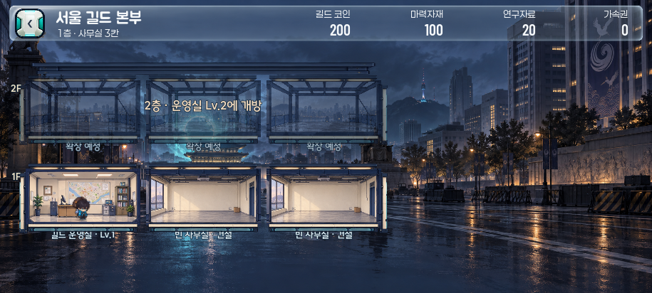
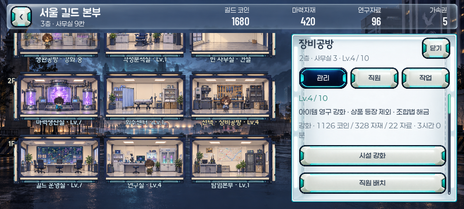
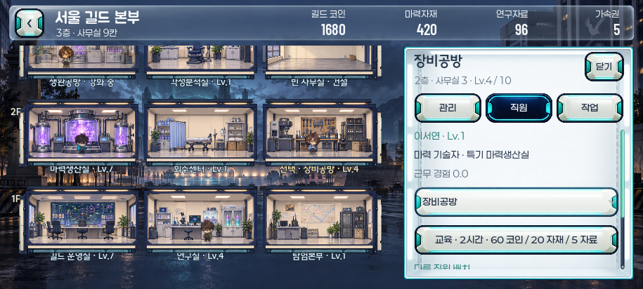
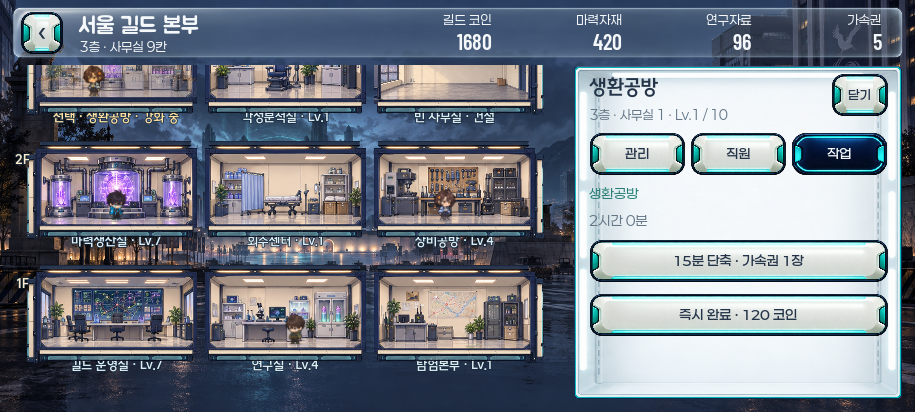
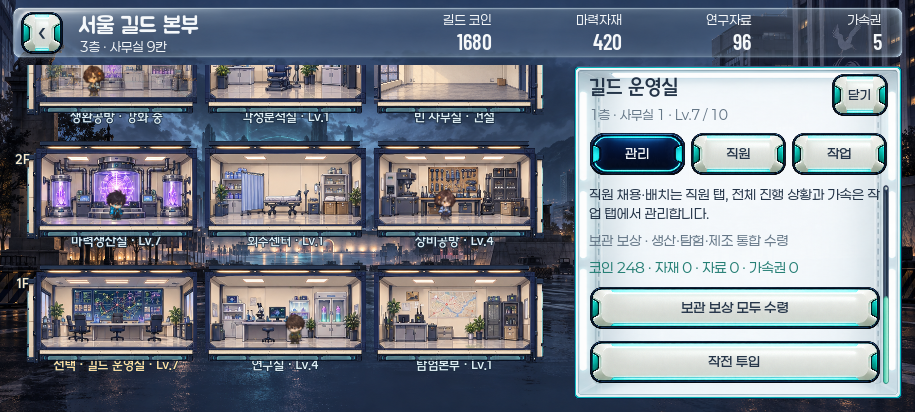
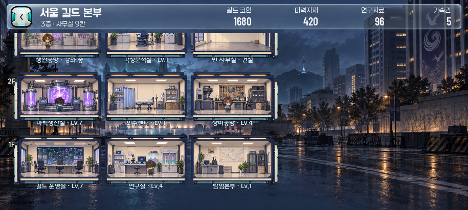

서울 길드 본부 · 고정 관리 패널
본 개발 폴더에 병합 완료 · 왼쪽 547px 건물 · 오른쪽 330px 전용 관리 공간 · 하단 버튼 없음
선택 전 · 초기 1층

사무실을 선택하지 않으면 오른쪽은 빈 배경입니다.시설 관리

같은 건물 크기에서 오른쪽 관리 탭만 열립니다.직원 탭

해당 시설의 근무 직원과 배치 대상을 오른쪽에서 선택합니다.작업 탭

남은 시간과 작업 가속을 같은 패널에서 조작합니다.운영실의 공통 기능

전체 직원·작업·보상 수령·작전 투입은 운영실에서 관리합니다.3층 확장 · 선택 전

왼쪽만 위아래 스크롤하며 오른쪽 공간은 계속 확보됩니다.